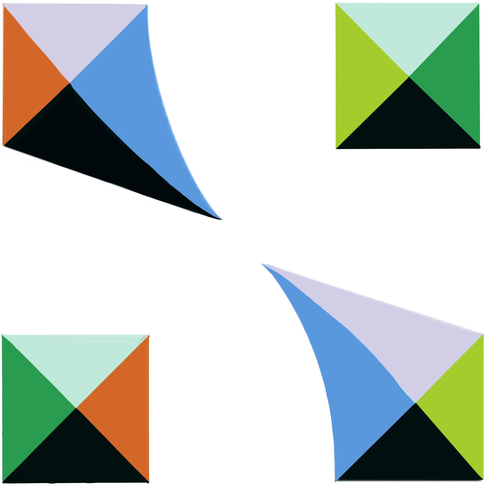

SiMa.ai Serial Console
TS ON
Press + New Connection to connect a device
Command Palette
This app requires the Web Serial API. Use Google Chrome or Microsoft Edge.

SiMa.ai Serial ConsolePress + New Connection to connect a device